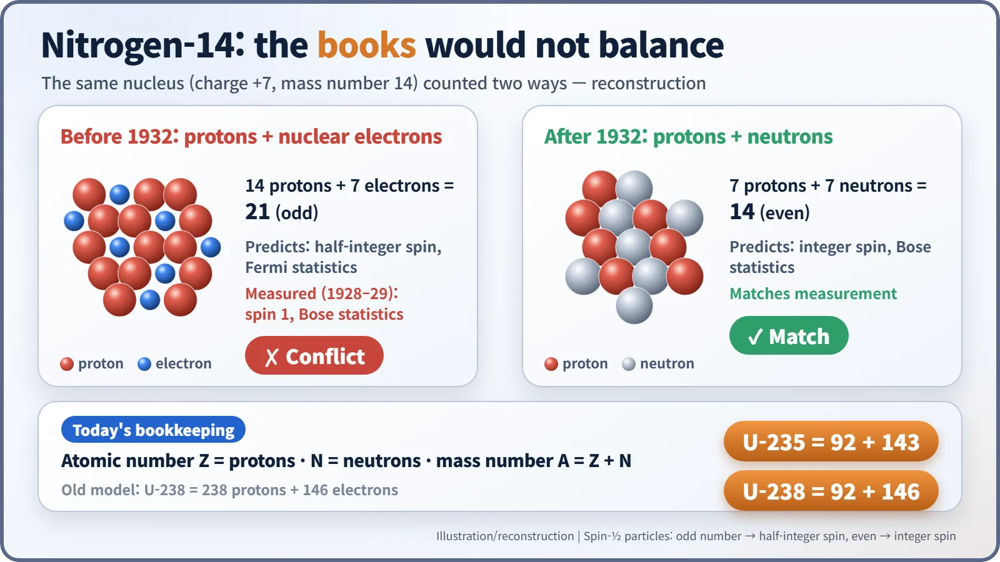
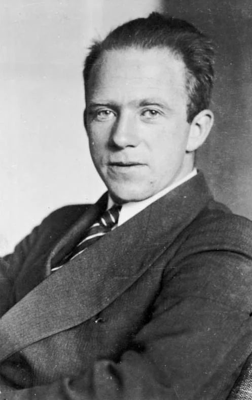
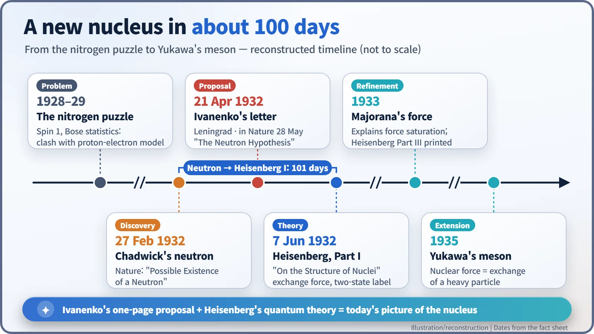

Nuclear History · 048
21 Particles or 14? Ivanenko, Heisenberg and the Proton–Neutron Model of the Nucleus (1932)
Weeks after the neutron was announced, a young theorist in Leningrad and a professor in Leipzig rewrote the books of the atomic nucleus.
Until 1932, physicists pictured the atomic nucleus as protons glued together by electrons, a scheme that balanced mass and charge but failed for nitrogen's spin. Weeks after the neutron was announced, Dmitri Ivanenko in Leningrad proposed that nuclei are made of protons and neutrons only, and Werner Heisenberg in Leipzig turned the idea into a quantum-mechanical theory. Together they gave us the "92 protons and 143 neutrons" bookkeeping we use today.
Two textbooks, two answers
Open two physics textbooks side by side and ask the same question: how many particles are there in a nitrogen nucleus? A modern textbook says 14: seven protons and seven neutrons. A physics textbook from 1931 would have said 21: fourteen protons and seven electrons. Same nucleus, very different count. What changed the answer was a handful of manuscripts written in the spring and summer of 1932, in Leningrad and in Leipzig.
Books that balanced, and a nucleus that didn't
In the 1920s physicists knew of only two building blocks: the proton and the electron. A nitrogen nucleus weighs about as much as 14 protons but carries a charge of only +7. So the bookkeeping went like this: put in 14 protons, then add 7 electrons to cancel 7 units of charge. Mass and charge both came out right. It looked like a tidy set of accounts. [4]
The trouble came from a property called spin. Protons and electrons both have spin ½, and if you assemble an odd number of spin-½ particles, the total spin must be a half-integer (½, 3/2 and so on). Think of socks: put an odd number of single socks in a drawer and one is always left without a partner. Twenty-one is odd. Yet around 1928, analysis of nitrogen's band spectra gave the nucleus a spin of 1. In 1929 Franco Rasetti measured the Raman spectrum of nitrogen molecules, and Walter Heitler and Gerhard Herzberg concluded that nitrogen nuclei behave like a collection of an even number of particles (they obey Bose statistics). It was as if the electrons inside the nucleus had lost their identity. On top of that, theory raised another objection, known as the Klein paradox: according to Dirac's equation, an electron could hardly be confined in a space as small as a nucleus. [4]

A one-page letter from Leningrad
On 27 February 1932, James Chadwick told the readers of Nature about the possible existence of an uncharged particle, the neutron. One of the first people to read the news as a new ingredient for the nucleus was Dmitri Ivanenko (1904–1994), a 27-year-old theorist at the Physico-Technical Institute in Leningrad. As a student he had already written papers with George Gamow and Lev Landau. [3]
He dated a short letter 21 April, and it appeared in Nature (vol. 129, p. 798) on 28 May 1932 under the title "The Neutron Hypothesis". Its point was simple: treat the neutron as a building block of the nucleus, and there is no longer any need for free electrons inside it. A nitrogen nucleus becomes 7 protons plus 7 neutrons, 14 particles in all, an even number, and the spin puzzle goes away. Ivanenko left open whether the neutron itself might be divisible, but he was proposing to rewrite the nuclear books. [1] [3]
Leipzig's trilogy and the particle with two faces
Meanwhile, at the University of Leipzig, Werner Heisenberg (1901–1976) was translating the same picture into the language of quantum mechanics. His paper "Über den Bau der Atomkerne" ("On the Structure of Atomic Nuclei", our translation), Part I, was received by Zeitschrift für Physik on 7 June 1932; Parts II and III followed, the last in 1933. Heisenberg is reported to have cited Ivanenko's letter in the first paper. [2] [3]
Two ideas stood out. The first was an exchange force: protons and neutrons hold on to each other by constantly swapping roles, as if trading charge back and forth. Picture two people tossing a ball between them; as long as they keep playing catch, neither can wander off. The second was to treat the proton and the neutron as two states of a single particle, distinguished by one extra label. It is the same player wearing two different shirts. This was the forerunner of what physicists later called isospin. [4]

Heisenberg had not fully given up the idea that the neutron might be a bound proton and electron, and in that case he could not explain how the electron was held together. The new picture did not arrive finished in one go. [4]
Whose model is it?
On publication dates alone, Ivanenko came first. But his letter was a one-page qualitative proposal, while Heisenberg built a theoretical framework that could actually be calculated. Western textbooks often mention only Heisenberg; Russian sources tend to lead with Ivanenko. Giving both of them credit seems the fair account. One more correction to a common mix-up: Heisenberg's 1932 Nobel Prize in Physics was awarded for creating quantum mechanics, not for this nuclear model. [5]

How "92 protons and 143 neutrons" became common knowledge
The model was refined quickly. In August 1932 Ivanenko and E. Gapon suggested that protons and neutrons fill energy levels in shells. In 1933 the Italian physicist Ettore Majorana proposed a form of exchange force that explained why nuclear forces stop growing stronger once enough particles are packed together (saturation). In 1935 Hideki Yukawa described the nuclear force as the exchange of a heavy particle. [3]
Out of all this came the bookkeeping we use today. The atomic number is the number of protons; the mass number is protons plus neutrons; isotopes are siblings that differ only in their neutron count. When people talk about reactor fuel and say that uranium-235 has 92 protons and 143 neutrons while uranium-238 has 146 neutrons, they are using a sentence that only became possible after 1932. Under the old accounts, uranium-238 would have been 238 protons plus 146 electrons.